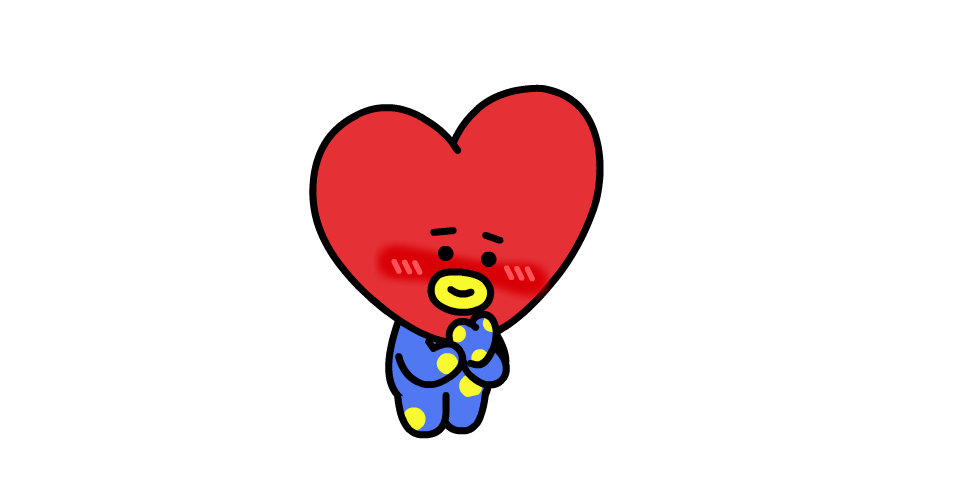

Robot del espacio. Fue el último en desvelarse y además de ser la nave espacial de TATA, representa al fandom: ARMY. Es un robot protector que siempre está velando por los demás de BT21

BT21 es el resultado de una colaboración entre la famosa marca Line Friends y BTS. El 25 de septiembre de 2017 aparecio en twitter una nueva cuenta llamada "BT21" que desperto curiosidad en el fandom, así como un sinfín de teorías. Un tweet con el dibujo de un conejo que preguntaba "¿De quién es el dibujo?". Tras este, otros 6 tweets iguales, pero con diferente imágenes, fueron apareciendo ese mismo día.
Tal y como BTS va explicando a lo largo de los vídeos, BT21 es un grupo de amigos, y además, un grupo de idols trainees que esta formado por: TATA, Chimmy, Cooky, Shooky, RJ, Koya y Mang
La historia de este singular grupo comienza cuando TATA, procedente del país BT, quiere conocer el mundo ya que es un ser bastante curioso. Para ello se monta en su robot, VAN, que lo lleva accidentalmente hasta el planeta Tierra. Una vez aquí descubre po casualidad una valla publicitaria con un vídeo de un grupo de idols (BTS) y decide que el también quiere ser igual de famoso y reconocido, quiere convertirse en un "universtar". Así emprende un viaje para reclutar a diferentes personajes para su grupo de idols, que pasa a llamarse BT21.
Todos los personajes tienen características y personalidades que los hacen únicos.
Así comienza su aventura, en la que TATA irá encontrándose con otros amigos que decidirán unirse a él. ¡Y ya es hora de conocerlos!
Del planeta BT. Un extraterrestre que puede modificar su cuerpo a su gusto sólo podía venir de V. El cantante además quiso que la forma de su cabeza fuera un corazón para transmitir el amor que había puesto en el proyecto. TATA es muy curioso sobre todo lo que los rodea, divertido y suele ir acompañado de VAN.
Robot del espacio. Fue el último en desvelarse y además de ser la nave espacial de TATA, representa al fandom: ARMY. Es un robot protector que siempre está velando por los demás de BT21
Jin tenía muy claro desde el principio que quería dibujar una alpaca, por la sencilla razón de que a todo el mundo le gustan las alpacas. RJ es un personaje tierno, amable y educado al que le encanta comer. Además siempre usa un pañuelo porque ¡siempre tiene frío!.

El perrito con traje amarillo que fue diseñado por Jimin es un chico lleno de pasión y que se esfuerza en todo lo que hace. A veces lo vemos con gafas de sol y normalmente tiene la lengua fuera de la boca. ¡Y siempre se lo está pasando bien!

Jungkook decidió dibujar un conejo. Pero Cooky es un conejo algo especial al que le encanta beber leche y el ejercicio. El pobre se esfuerza mucho para que le salgan músculos pero… no tiene demasiado éxito.

Suga no tenía muy claro qué era lo que quería hacer y el resultado acabó siendo una galleta a la que le gusta meterse en problemas y tocar un poco las narices. Le da miedo y odia la leche porque hace que se desintegre, aunque eso no parece importarle mucho a Cooky, que está obsesionado con hacer crecer sus músculos. Y cómo se pueden imaginar eso da lugar a divertidos encuentros animados.

Lo crean o no, el objetivo de J-Hope era dibujar un caballo. Al final, el resultado es Mang, que no sabemos si es un caballo de verdad porque utiliza una máscara siempre. Es una chica y le encanta bailar, ¡así que lo hace todo el tiempo!

Es uno de los diseños más fieles al primer boceto de su creador. RM tenía muy claro a Koya desde el principio. Es un koala inteligente pero al que le encanta dormir y cuando alguien le sorprende las dos orejas se le caen al suelo.

Debemos destacar, sí o sí, la figura de VAN. Fue la última incógnita de BT21 en salir a la luz. Cada miembro de BT21 representa a cada uno de los miembros de BTS, por lo que lo normal sería que solo existieran 7 nuevos componentes para LINE FRIENDS, por lo que cuando aparecieron 8 de ellos las suposiciones empezaron. No fue hasta hace unas semanas que RM, durante un directo habló de VAN. Este personaje de BT21 fue creado por él mismo, siendo su misión es ser el protector de BT21 y por ello, representa a ARMY
Todo lo que hace BTS tiene una repercusión enorme e inmediata y sus diseños para Line FRIENDS no podían ser menos. A través de sus vídeos y la cuenta de Twitter, BTS anunciaron que BT21 no sólo estarían disponibles en forma de emoticonos sino que además servirían de inspiración para los diseños de merchandasing de Line.
Zapatillas, camisetas, bolígrafos, llaveros, carteras, y peluches de diferentes tamaños llenaron las tiendas de Seúl, Nueva York o Japón. La demanda de productos fue tal que la franquicia tuvo que establecer restricciones para que nadie se llevase dos productos del mismo tipo.
En los últimos años, se han abierto tiendas emergentes BT21 especiales y cafés temáticos en Asia, y también han llegado a América, con tiendas emergentes recientemente en Nueva York y Los Ángeles. Junto con calcomanías, posavasos y carteles únicos, los cafés BT21 cuentan con diferentes elementos de menú en cada país y ciudad.
BT21 también protagonizó una linda campaña publicitaria para el Aeropuerto Internacional de Incheon de Corea este año, como parte de una estrategia de marketing dirigida a los millennials en movimiento por Asia. Los anuncios lúdicos resaltan cosas que hacer durante el tránsito por el aeropuerto. Aquellos que vuelan dentro y fuera de la Terminal 2 en el aeropuerto también pueden usar los carros de equipaje de la marca BT21.
Desde su «debut» oficial, BT21 han sido los protagonistas de diferentes aventuras a través de los breves cortos animados que podéis encontrar en Internet así como el juego de puzzles PUZZLE STAR. No hay ninguna duda de que estos adorables emoticonos han logrado tener personalidad propia y conquistar a su público.
La historia detrás de BT21 es divertida y da pie a muchas escenas graciosas que podéis seguir desde su cuenta de Twitter.